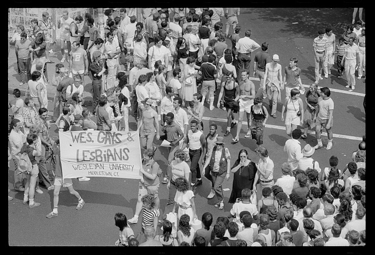

› Professional Responsibilities, Digital Tools, and Necessary Skills
Quotations have been lightly edited for clarity.
Professional Responsibilities
In our interview with Sam, they described their day-to-day activities, reflecting the general duties explored in our pre-research, but with specific tailoring to OUTWORDS’ unique project goals and prioritized material types. They described these as falling into "four big buckets":
• Project coordination → communications, workflow, training interns/volunteers
• Digital preservation → back-end metadata encoding, indexing of oral history transcripts, database management
• Interviewing → research, question development, formal interview with tech and editorial team
• Photo collections management → obtaining image files from narrators, photo releases, captioning
As a community-centered and social justice-oriented organization, Sam’s responsibilities are not limited to the logistical archival activities, but include participation in outreach and public education. They state:
"We all have allocated funds to do professional development, whether that's doing webinars or going to conferences. [...] And then also I'm starting to learn and get a little bit more involved in program assessment, especially with our intern and volunteer programs. And then there's also an encouragement to generally go to city or regional queer history, oral history webinars. And we can, oftentimes build those for one-off moments, and, in general, use it as a tool for outreach as well, and to share back with the team what we gleaned.
Technical Tools and Metadata Standards
As an entirely remote organization, OUTWORDS uses a variety of digital tools to facilitate communications and projects, as well as organize files. Sam mentioned the following tools and usages:
• Communications → Gmail
• Project management → Asana, Team Up
• File storage → Google Drive
• Metadata tagging, encoding, and management → Airtable, Aviary
• Graphic design, photo editing → Adobe Creative Suite 5, Canva, Preview
The populations represented in OUTWORDS are historically marginalized, so Sam utilizes multiple authorities and vocabularies in their metadata work, representing both institutional standards and specific terminology used by queer communities. These include:
• Library of Congress Subject Headings and Authority Tables
• Homosaurus
• To a lesser extent, Getty Vocabularies
Skill Snapshot
Sam noted that because OUTWORDS is a remote, grassroots archive, "having a lot of self management and...internal pacing is a really important part of our work."
They also emphasized that skills around project management would be incredibly useful within the field due to the heavy amounts of "internal collaboration" and need for "staggered deliverables based on season events, programming, or grant deadlines." Furthermore, having experience with database research, metadata and archival knowledge, and general research skills is very important, along with adaptability, data analysis, and synthesizing skills to communicate effectively to teams within the organization, as well as to share information with people outside of the field. Perhaps the most important skill, by far, would be an increased adaptability in technological literacy for the, almost guaranteed, possibility that one would have to learn new software, manage websites and metadata, and use digital information data systems. Technological advancements are at ever-shifting tides of achievement and form, having the ability to incorporate new systems into older forms of archives with knowledge of ethical stewardship over archival materials will bolster one's performance within the field.
"I think being gracious and a collaborative, solution-oriented thinker—and also being patient, knowing that we have to work within our immediate team and fundings capacity—is all really important, and...just being really honest about when you need help.

› Political Challenges and Invisible Labor
As a community-based organization that focuses on marginalized populations, especially in the hostile political climate of discursive and legislative attacks against LGBTQ+ people, OUTWORDS and other queer archives face particular challenges in the process of carrying out their work.
Sam further explained that due to the nature of the archive being a niche, grassroots organization, they depend on curated grants to continue operation. However, some larger, more notable grants have "been on and off," or at risk of being disabled or fully defunded all together. Overall, Sam noted that the members of the archive are trying to transform skills to better fit the politcal and social environment of the queer archival field. While they have secured more grants, even that is notably shaky within this tense climate.
› Other OUTWORDS Projects
Outside of oral history work, Sam described OUTWORDS' participation in other educational and outreach activities, including a new multimedia collections page for queer elders in the American South who have been active in the HIV and AIDS activism movement. This project is named, Invisible Histories, and is fully available online. In the past, OUTWORDS has also developed an exhibit at the Santa Monica History Museum, turning local LA interviews into a physical, educational project. Additionally, OUTWORDS organizes events during LGBTQ+ History Month in October, such as for Circa Fest in LA, which consists of a wide range of formats and topics such as video compilations or panels in which elders can share their experiences with the topics and themes curated for that year.
› Technological Adaptations and Perspective on AI
Sam stated that computational tools like AI can be useful when dealing with large amounts of data or when creating graphics for displaying information. However, they added that AI cannot replace human skills of interpretation. These are especially important when dealing with the histories of marginalized communities where rectifying issues of representation is typically a major motivating goal. Humans know best how to describe and sensitively handle stories of human experiences. Sam further explained that corporate interests and surveillance are embedded in AI, which can raise ethical concerns surrounding AI’s inclusion in community archival work.